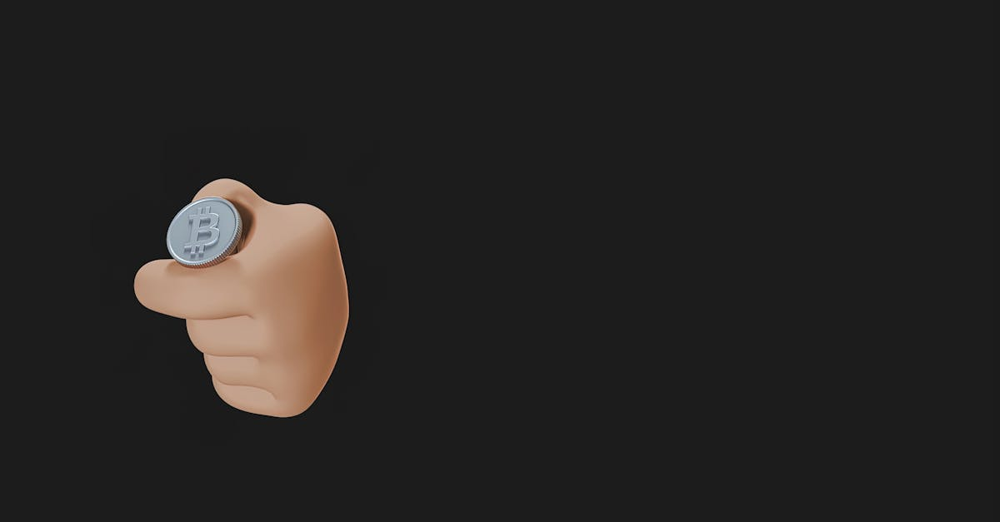

L'Événement Majeur : Pump.Fun Brûle 370M$ de PUMP
La scène des crypto monnaies est en ébullition suite aux récentes annonces de Pump.Fun, une plateforme qui a rapidement gagné en popularité pour sa facilité de création de jetons, notamment dans l'écosystème des meme coins. Dans un mouvement audacieux et potentiellement stratégique, la plateforme a procédé à la destruction (burn) de 370 millions de tokens PUMP, représentant une valeur considérable. Cet événement, loin d'être anecdotique, a immédiatement suscité l'intérêt des investisseurs et des analystes. Le token PUMP a réagi positivement à cette nouvelle, enregistrant une hausse notable de 6% pour atteindre 0,0019$. Cette action de réduction de l'offre est souvent interprétée comme un signal haussier par le marché, visant à augmenter la rareté et, par conséquent, la valeur potentielle des tokens restants. Pour les traders, surtout ceux utilisant des stratégies algorithmiques sophistiquées, surveiller de près ces mouvements de destruction de tokens est crucial. Les agents IA de CryptoMind AI analysent en temps réel l'impact de ces décisions sur la dynamique offre-demande, cherchant à identifier les opportunités avant qu'elles ne deviennent évidentes pour le marché traditionnel. Cette initiative soulève des questions sur la pérennité du modèle de Pump.Fun et sur sa capacité à innover dans un espace aussi compétitif que celui des meme coins, où la volatilité règne en maître. La confiance des investisseurs est un élément clé, et des actions telles que ce burn massif peuvent contribuer à la renforcer, signalant une gestion active et une volonté de créer de la valeur à long terme, même au sein d'un secteur souvent perçu comme spéculatif.
👉 À lire : Michael Saylor : Nouvel Achat Bitcoin en Vue ?

Lancement des Charity Coins : Une Nouvelle Vague sur Pump.Fun
Parallèlement à la destruction de tokens PUMP, Pump.Fun a inauguré une nouvelle fonctionnalité axée sur les Charity Coins, via un partenariat avec la plateforme donate.gg. Cette initiative vise à canaliser l'énergie spéculative des meme coins vers des causes caritatives. Le principe est simple : des tokens dédiés à des œuvres de bienfaisance peuvent désormais être créés et échangés sur Pump.Fun. Les fonds générés par la vente de ces tokens sont ensuite reversés aux organisations choisies. C'est une tentative intéressante de marier la culture des meme coins, souvent associée à l'amusement et à la spéculation, avec un objectif socialement responsable. Les premiers retours semblent positifs, avec un engouement certain pour ces nouveaux types de jetons. Les traders algorithmiques, y compris ceux qui utilisent les solutions de CryptoMind AI, examinent cette nouvelle catégorie de tokens sous plusieurs angles. Au-delà de la simple spéculation, la présence d'une composante caritative peut influencer la perception du risque et la volatilité à long terme. L'intégration de donate.gg suggère une volonté de transparence et de crédibilité, des facteurs essentiels pour attirer un public plus large et potentiellement plus stable. Cette fusion entre 'fun' et 'fund' (pour la charité) pourrait bien marquer une évolution significative dans l'écosystème des jetons créés sur des plateformes comme Pump.Fun, attirant une nouvelle démographie d'investisseurs soucieux de l'impact de leurs placements.
👉 À lire : Pudgy Penguins : Rallye, déblocage et risque de liquidité
Analyse Technique du Token PUMP : Que Dit le Graphique ?
Suite à l'annonce du burn et au lancement des Charity Coins, le token PUMP a montré une résilience intéressante, grimpant à 0,0019$. D'un point de vue technique, cette hausse, bien que modeste en pourcentage (6%), est significative dans le contexte actuel. Les indicateurs techniques commencent à peine à intégrer ces nouvelles informations. Pour les analystes et les algorithmes de trading, plusieurs éléments sont à surveiller. Premièrement, le volume des transactions sur PUMP devrait être scruté attentivement pour confirmer la force de cette reprise. Une augmentation du volume accompagnerait la hausse du prix, validant l'intérêt des traders. Deuxièmement, les niveaux de support et de résistance clés doivent être identifiés. La zone autour de 0,0019$ pourrait devenir un premier niveau de résistance à franchir. Si PUMP parvient à s'établir au-dessus de ce seuil, de nouvelles perspectives haussières pourraient s'ouvrir. Les moyennes mobiles, comme la moyenne mobile sur 50 jours et 200 jours, fourniront également des indications sur la tendance à moyen et long terme. L'indice de force relative (RSI), actuellement hors de zone de surachat ou de survente extrême, suggère qu'il y a encore de la marge pour une appréciation. Les agents IA de CryptoMind AI analysent ces données en continu, croisant les signaux techniques avec les flux d'actualités pour affiner leurs stratégies. L'objectif est de détecter les divergences potentielles et les configurations chartistes prometteuses, permettant ainsi d'anticiper les prochains mouvements du marché avec une précision accrue. La volatilité reste élevée, mais la réaction du PUMP token à ces annonces est un premier indicateur positif.

Le Phénomène Meme Coin : Entre Spéculation et Innovation
Les meme coins ont prouvé leur capacité à générer une attention médiatique et des gains spectaculaires, mais aussi des pertes tout aussi rapides. Le succès de figures comme Dogecoin et Shiba Inu a ouvert la voie à une multitude de projets similaires, chacun cherchant à capturer une fraction de cette folie spéculative. Pump.Fun s'est positionné comme un catalyseur dans cet espace, offrant une rampe de lancement accessible pour les créateurs de jetons. La simplicité de son interface permet à quiconque, ou presque, de lancer son propre meme coin en quelques minutes. Cependant, cette facilité d'accès soulève des questions sur la qualité et la viabilité à long terme de nombreux projets. L'arc narratif des 'Charity Coins' lancé par Pump.Fun représente une tentative d'apporter une nouvelle dimension à ce phénomène. En associant la viralité des meme coins à des causes nobles, la plateforme cherche à se différencier et potentiellement à attirer une base d'utilisateurs plus engagée. Les algorithmes de trading, particulièrement ceux développés par des entreprises comme CryptoMind AI, sont conçus pour naviguer dans cette complexité. Ils ne se contentent pas de suivre les tendances, mais cherchent à comprendre les mécanismes sous-jacents, y compris l'impact psychologique et communautaire des meme coins. L'innovation de Pump.Fun, si elle est bien exécutée, pourrait redéfinir les standards de création de jetons et influencer la manière dont les futurs meme coins sont perçus et valorisés. La question n'est plus seulement de savoir quel meme coin va 'pomper', mais lequel apporte une valeur ajoutée réelle ou un concept suffisamment engageant pour perdurer.
Quelle est la Meilleure Stratégie d'Achat de Meme Coin Aujourd'hui ?
Face à la multiplication des meme coins et aux récentes initiatives de Pump.Fun, la question de la meilleure stratégie d'achat devient primordiale. Il n'existe pas de réponse unique, car le marché des meme coins est intrinsèquement volatil et spéculatif. Cependant, plusieurs approches peuvent être envisagées :
- Recherche Approfondie (DYOR - Do Your Own Research) : Avant tout investissement, il est crucial de comprendre le projet derrière le meme coin. Quelle est sa communauté ? Quelle est sa feuille de route (même si rudimentaire pour certains) ? Y a-t-il un objectif clair, comme les Charity Coins ?
- Gestion du Risque Rigoureuse : N'investissez jamais plus que ce que vous pouvez vous permettre de perdre. Les meme coins peuvent connaître des hausses fulgurantes, mais aussi des chutes brutales. La diversification sur plusieurs meme coins peut atténuer le risque, mais ne l'élimine pas.
- Suivi des Tendances et des Communautés : Les meme coins sont souvent propulsés par le buzz sur les réseaux sociaux (X, Telegram, Reddit). Identifier les communautés actives et les narratifs émergents peut donner un avantage. Les outils d'analyse de sentiments, souvent intégrés dans les plateformes d'IA comme CryptoMind AI, sont précieux pour cela.
- Stratégies d'Entrée et de Sortie Claires : Définissez à l'avance vos objectifs de profit et vos seuils de perte. Par exemple, vendre une partie de vos actifs une fois qu'un certain profit est atteint (prise de bénéfices partielle) peut sécuriser des gains.
- Exploiter les Plateformes Innovantes : Des plateformes comme Pump.Fun offrent des opportunités uniques, mais comportent aussi des risques spécifiques. Comprendre leur fonctionnement et leur tokenomics (comme le burn de PUMP) est essentiel.
Pour les traders utilisant des agents IA, la stratégie consiste souvent à automatiser ces principes. L'IA peut surveiller les réseaux sociaux, analyser les graphiques en temps réel, exécuter des ordres d'achat et de vente basés sur des critères prédéfinis, et même ajuster les stratégies en fonction de la volatilité du marché. L'objectif est de rester objectif et discipliné, là où l'émotion humaine peut souvent conduire à de mauvaises décisions.

L'Impact sur l'Écosystème Solana et au-delà
Pump.Fun opère principalement sur la blockchain Solana, réputée pour sa rapidité et ses faibles frais de transaction. Cette synergie a été un facteur clé dans l'ascension fulgurante de la plateforme. La facilité de création de tokens sur Solana via Pump.Fun a conduit à une prolifération de nouveaux projets, contribuant à la congestion occasionnelle du réseau mais aussi à son dynamisme. Le succès de Pump.Fun et l'engouement pour les meme coins qu'elle héberge ont un impact direct sur l'écosystème Solana dans son ensemble. Les frais de transaction (gas fees), bien que bas comparés à Ethereum, augmentent lors des périodes de forte activité. Les développeurs et les utilisateurs bénéficient de l'innovation, mais doivent aussi composer avec la volatilité et les défis liés à la scalabilité. L'introduction des Charity Coins pourrait attirer une nouvelle catégorie d'utilisateurs et de développeurs sur Solana, diversifiant ainsi l'écosystème au-delà des simples jeux et de la DeFi spéculative. Pour les agents IA spécialisés dans le trading crypto, l'écosystème Solana représente une mine d'informations. L'analyse des flux de transactions, des nouveaux contrats déployés, et de l'activité des portefeuilles sur cette blockchain permet d'identifier des patterns et des opportunités spécifiques. La capacité à traiter rapidement un grand volume de données est ici un avantage décisif. La tendance des Charity Coins pourrait également influencer d'autres blockchains à explorer des modèles similaires, créant une vague d'innovation dans le secteur des tokens à vocation sociale ou caritative. L'interconnexion entre les plateformes comme Pump.Fun, les blockchains sous-jacentes comme Solana, et les initiatives comme les Charity Coins dessine une nouvelle carte du paysage crypto.
Le Rôle Crucial de l'Intelligence Artificielle dans le Trading de Meme Coins
Naviguer dans le monde imprévisible des meme coins peut sembler être un jeu de hasard. Cependant, l'avènement de l'intelligence artificielle transforme radicalement cette perception. Les agents IA, comme ceux développés par CryptoMind AI, sont conçus pour analyser des quantités massives de données à une vitesse surhumaine. Ils traitent non seulement les données on-chain (transactions, mouvements de fonds) et off-chain (actualités, réseaux sociaux), mais aussi les nuances du sentiment du marché. Dans le contexte des meme coins, où le sentiment et la psychologie collective jouent un rôle prépondérant, l'IA offre un avantage compétitif indéniable. 'Les algorithmes peuvent identifier des corrélations subtiles entre le sentiment sur X et les mouvements de prix sur Pump.Fun, des corrélations qu'un humain mettrait des heures, voire des jours, à déceler', explique un analyste fictif de CryptoMind AI. Ces agents peuvent détecter les 'pump and dump schemes' naissants, évaluer la solidité d'une communauté autour d'un nouveau Charity Coin, ou prédire la réaction d'un token comme PUMP face à des événements spécifiques. La capacité de l'IA à exécuter des transactions 24h/24 et 7j/7, sans être affectée par la fatigue ou les émotions, est également un atout majeur. Elle permet de capitaliser sur des opportunités de trading de très courte durée qui seraient inaccessibles aux traders humains. L'objectif n'est pas de remplacer le jugement humain, mais de l'augmenter, en fournissant des insights basés sur des données objectives et une exécution rapide et précise. L'IA devient ainsi un outil indispensable pour quiconque souhaite aborder le marché des meme coins avec une approche plus stratégique et moins aléatoire.
Perspectives Futures : Pump.Fun et l'Évolution des Meme Coins
L'initiative des Charity Coins sur Pump.Fun pourrait marquer un tournant. Si le modèle réussit à attirer des fonds significatifs pour des causes caritatives tout en offrant des opportunités de trading, il pourrait inspirer d'autres plateformes et créateurs de tokens. L'avenir des meme coins pourrait ainsi s'orienter vers des projets avec une utilité ou un objectif plus concret, allant au-delà de la simple spéculation communautaire. Pump.Fun devra cependant relever plusieurs défis. Maintenir la sécurité de sa plateforme, gérer la croissance rapide de son écosystème et continuer à innover seront essentiels pour conserver son avantage concurrentiel. La concurrence est rude, et d'autres plateformes pourraient chercher à copier son modèle ou à proposer des alternatives plus attrayantes. Pour les investisseurs, la prudence reste de mise. La volatilité inhérente aux meme coins ne disparaîtra pas du jour au lendemain. Cependant, les outils d'analyse et de trading basés sur l'IA offrent désormais des moyens plus sophistiqués d'aborder ce marché. Les traders qui sauront intégrer ces technologies dans leurs stratégies auront probablement un avantage significatif. Le succès des Charity Coins dépendra de la confiance qu'ils parviendront à instaurer auprès des donateurs et des investisseurs. La transparence dans le processus de don et la démonstration d'un impact réel seront des facteurs clés. Pump.Fun semble avoir lancé un arc narratif potentiellement puissant, mêlant spéculation, innovation et responsabilité sociale. Reste à voir comment cet arc se déroulera et quelle sera sa place dans la grande histoire des crypto monnaies.
Conclusion
L'écosystème des crypto monnaies est en perpétuelle évolution, et les récentes manœuvres de Pump.Fun en sont une illustration parfaite. En brûlant une quantité massive de tokens PUMP et en lançant les Charity Coins, la plateforme redéfinit les contours du marché des meme coins. Ces actions ont non seulement stimulé le token PUMP, mais ont surtout ouvert la voie à une nouvelle génération de jetons alliant potentiel spéculatif et impact social. Pour les investisseurs, cela signifie de nouvelles opportunités, mais aussi la nécessité d'une analyse plus poussée et d'une gestion des risques accrue. C'est dans ce contexte que les agents IA de CryptoMind AI prennent tout leur sens. En traitant des données complexes en temps réel, en analysant le sentiment du marché et en exécutant des stratégies de trading optimisées 24h/24, ils offrent un avantage précieux pour naviguer dans la volatilité des meme coins et identifier les projets les plus prometteurs, y compris les innovants Charity Coins. L'avenir dira si Pump.Fun parviendra à pérenniser son succès, mais une chose est certaine : l'innovation continue de façonner le paysage de la finance décentralisée, et l'IA est désormais au cœur de cette transformation.